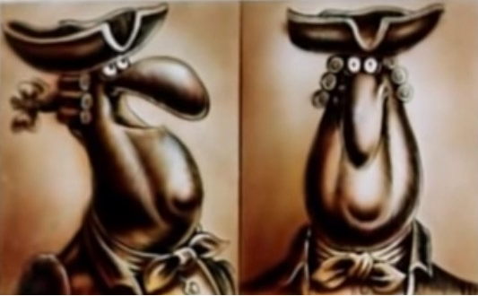
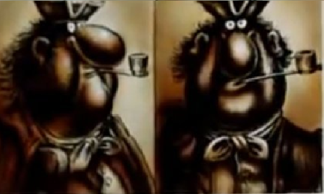

H-02
Made by Denis bebeKa, Violettk@, LizzoK and Sushiwok.
Наши досье
Денис Ушков
Он же Доктор Ливси.Очень хороший и весёлый человек.
Характер общительный. Не женат
Александр Кузнецов

Он же Билли Бонс. Обладатель карты острова сокровищ.
Много пьёт и всегда простужен. Характер скверный. Не женат.
Елизавета Антипова

Она же капитан Смоллет. Старый моряк и пират.
Говорит правду в глаза, отчего и страдает. Характер прескверный. Не женат.
Виолетта Воробьёва

Она же Джон Сильвер. Самый страшный пират, но удачно притворяется добрым.
Характер скрытный. Не женат.
***
Ссылки на полезные ресурсы